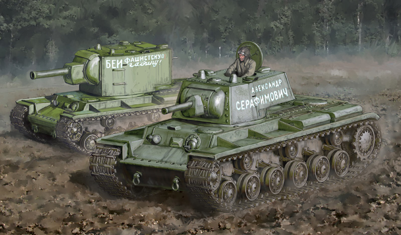
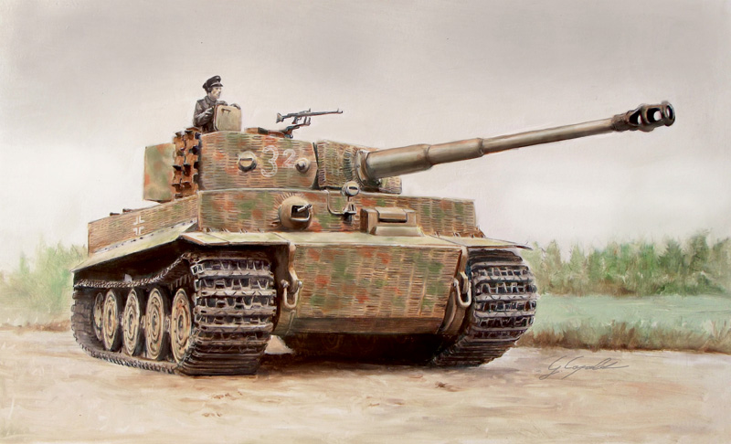
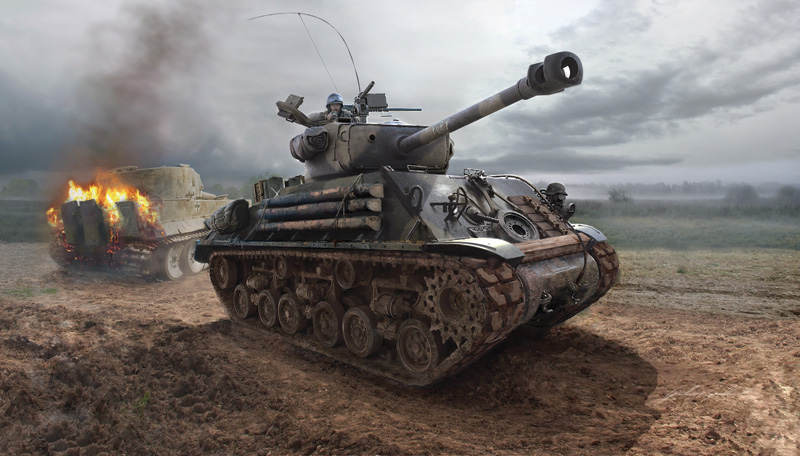

Tank Info
Probably what you clicked for
The Russian KV2 and KV1.
The Soviet KV1, a HT (Heavy Tank), was a formidable weapon the Russians had built in order to compete with the Germans' Panzers. It featured a 76mm Main Cannon that could shred through most German armour at the time. However, its KV2 variant, featuring the same hull as the KV1, featured a 152mm Howitzer fixiated on its turret, classifying it as an AG (Assault Gun).
The German Tiger 1.
The German Tiger 1, one of the most famous tanks used in 22 2, was an absolute powerhouse agains the Americans. Its 88mm Flak gun could rip through allied armoured divisions with ease! It lacked in numbers however, failing to keep up with the mass production the Allies had, resulting in the downfall of Germany during the closing years of WW2.
The American M4 Sherman.
The American M4 Sherma, possibly one of the most mass-produced tanks in the world, had an amazing track record. It was easy to maintain, use, and repair. Making it easy for all the tank crews that drove, fired, and reloaded its guns and treads. It was weak on its own, but with the sheer power of numbers, the Americans and Allied Powers overcame the German Reich and won the War.